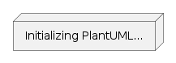

<!DOCTYPE html>
<html lang="en">
  <head>
    <meta charset="utf-8">
    <meta name="viewport" content="width=device-width, initial-scale=1.0">
    <title>PlantUML.js with Asciidoctor.js Example</title>
    <!-- Asciidoctor.js imports -->
    <script src="node_modules/@asciidoctor/core/dist/browser/asciidoctor.js"></script>
    <link rel="stylesheet" href="https://fonts.googleapis.com/css?family=Open+Sans:300,300italic,400,400italic,600,600italic%7CNoto+Serif:400,400italic,700,700italic%7CDroid+Sans+Mono:400,700">
    <link rel="stylesheet" href="node_modules/@asciidoctor/core/dist/css/asciidoctor.css">    
    <!-- Require cheerpj dependency -->
    <script src="https://cjrtnc.leaningtech.com/2.3/loader.js"></script>
    <!-- Require PlantUML.js -->
    <script src="node_modules/@plantuml/plantuml.js/plantuml.js"></script>
  </head>
  <body>
    <div id="content"></div>
    <script type="text/javascript">
        const asciidoctor = Asciidoctor({
            runtime: {
                ioModule: 'xmlhttprequest'
            }                
        })

        // add a converter that marks plantuml diagrams and add images under
        class PlantUMLConverter {
            constructor () {
                this.baseConverter = asciidoctor.Html5Converter.create()
            }

            convert (node, transform) {
                if (node.getNodeName() === 'listing' &&
                node.getAttribute('style') === 'source' &&
                node.getAttribute('language') === 'plantuml' &&
                node.getAttribute('render', 'true') === 'true'
                ) {
                    let html = '<div class="plantuml-diagram">'
                    html += this.baseConverter.convert(node, transform)
                    html += ""
                    html += '</div>'
                    return html
                }else{
                    return this.baseConverter.convert(node, transform)
                }
            }
        }
        asciidoctor.ConverterFactory.register(new PlantUMLConverter(), ['html5'])

        // render asciidoctor as html
        const content = 'include::http://localhost:8080/sequence-diagram.adoc[]'
        document.getElementById('content').innerHTML = asciidoctor.convert(content, {
            safe: 'safe',
            backend: 'html5',
            base_dir: 'http://localhost:8080',
            doctype: 'article',
            header_footer: true,
            standalone: false,
            attributes: 'linkcss copycss! toc! numbered! icons! compat-mode'
        })

        // render marked plantuml diagrams
        plantuml.initialize('/app/node_modules/@plantuml/plantuml.js').then(() => {
            for(const element of document.querySelectorAll('.plantuml-diagram')){
                const code = element.querySelector('*:is(code, pre)').innerText
                const url = plantuml.renderPng(code).then((blob) => {
                    element.querySelector('img').src = window.URL.createObjectURL(blob)
                })
            }
        })
    </script>
  </body>
</html>
